最终成片
有声标准版，60 秒。Grok 动态素材只做画面层；所有关键中文、图表和结论由 HyperFrames 控制，千问 Dylan 1.7B 中文旁白负责解说。
制作结论
这次验证的最佳分工是：Grok 不负责最终文字，不负责精确图表，也不硬做 20 秒到 30 秒的二次扩展。Grok 的价值是把分镜图变成有复杂运动感的素材，HyperFrames 的价值是把素材变成可控、可复现、可读的成片。
由于此前 Grok 20 秒视频继续扩展到 30 秒会被 API 限制拒绝，最终采用剪辑合成路线：多个 8-20 秒片段进入 HyperFrames，统一转码为 CFR 单视频流，再由 HTML 时间轴完成 60 秒短片。
验收结果
| 项目 | 结果 |
|---|---|
| 视频时长 | 60.000 秒 |
| 分辨率 | 1920×1080 |
| 帧率 | 24fps |
| 配音 | 千问 Dylan 1.7B / AAC / 60.000 秒 |
| HyperFrames lint | 0 error / 2 warning |
| HyperFrames inspect | 0 layout issue |
| 中文字幕 | 关键帧人工检查通过 |
工作流拆解
先生成 6 张 16:9 分镜图，用来统一构图、色彩、镜头语言和题材气质。
选择开场、灰度运营样本、视频实测三张分镜图，用 Grok image-to-video 生成 8 秒动态素材。
把 Grok 视频、原报告截图、字幕、评分条和流程图放入 HTML 时间轴，渲染成最终 MP4。
Image2 分镜图
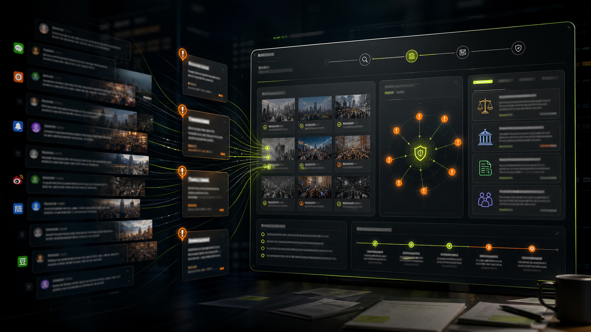
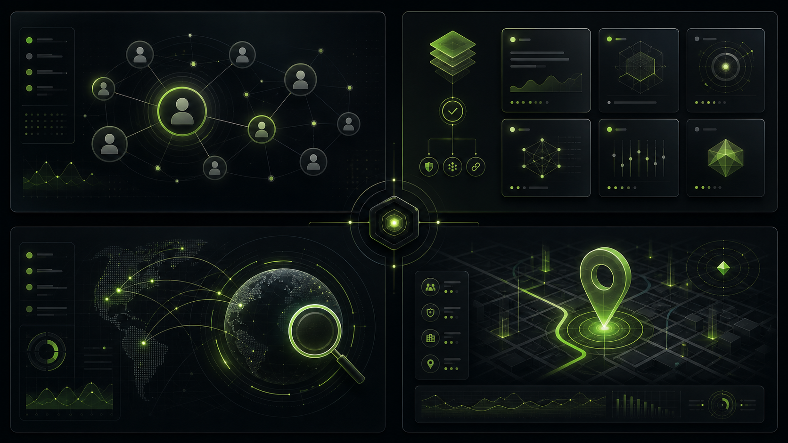
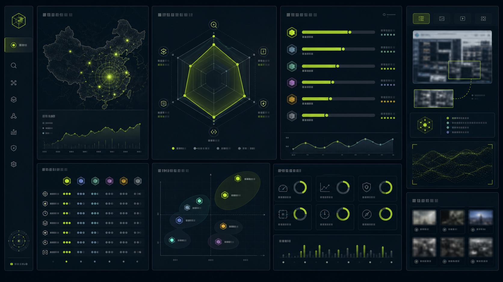
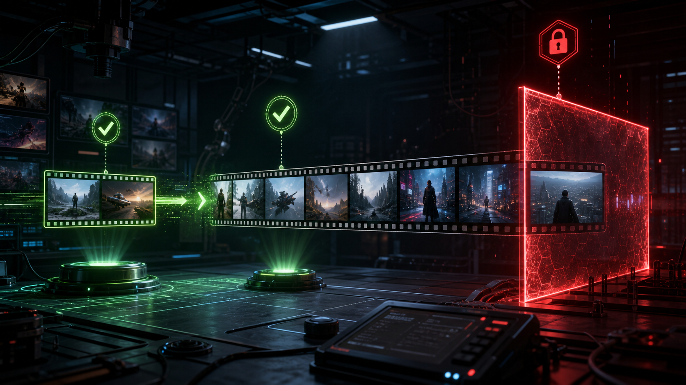
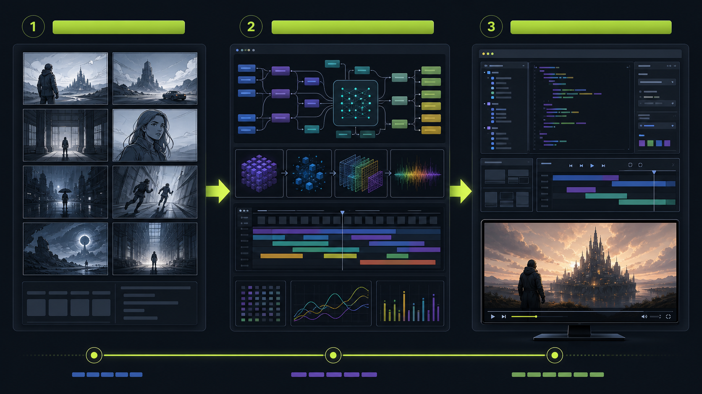
Grok 生成的视频素材
HyperFrames 成片关键帧
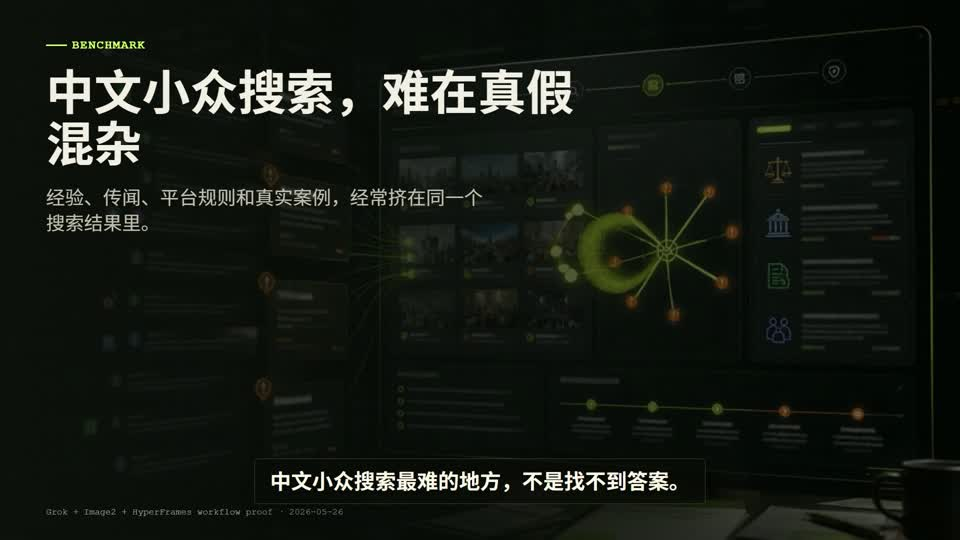
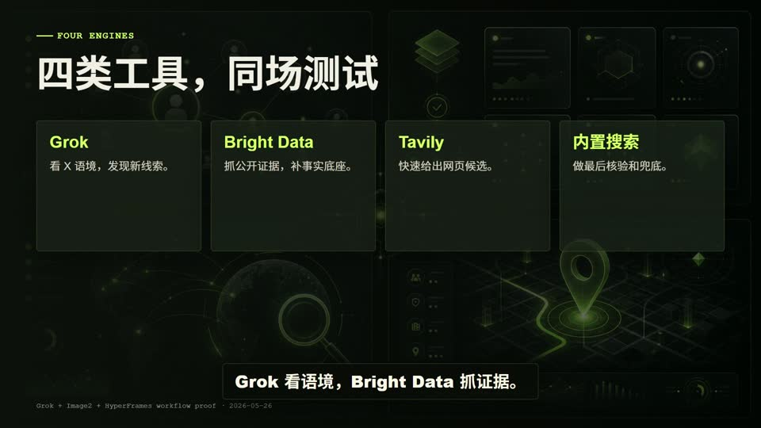
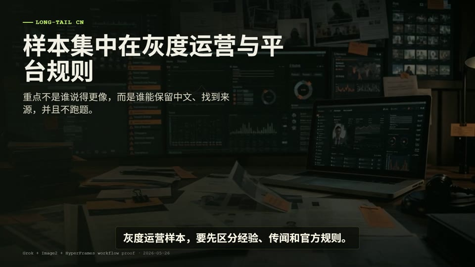
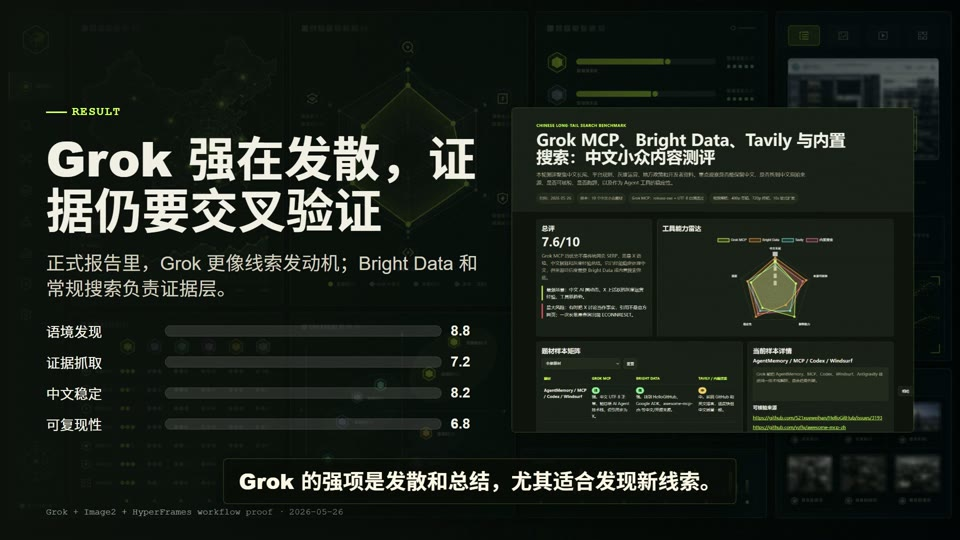
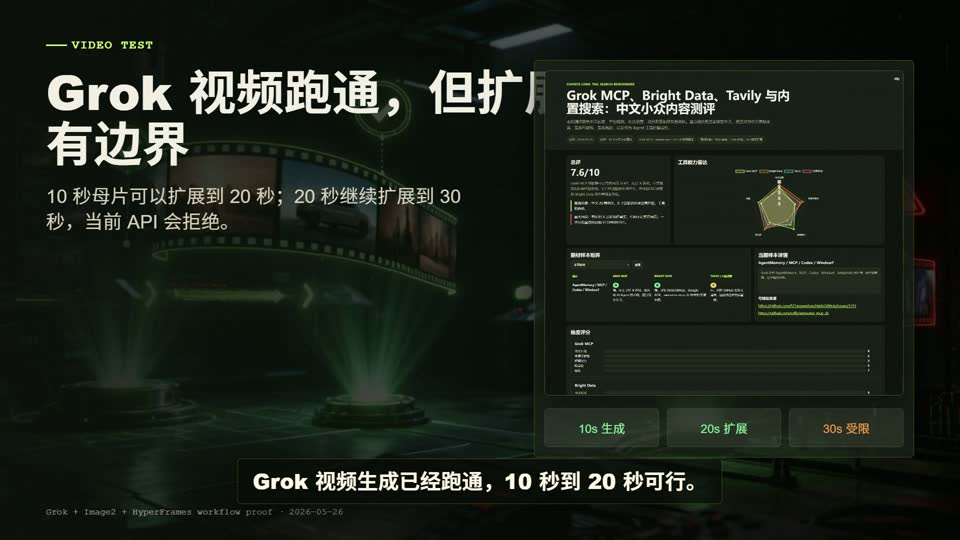
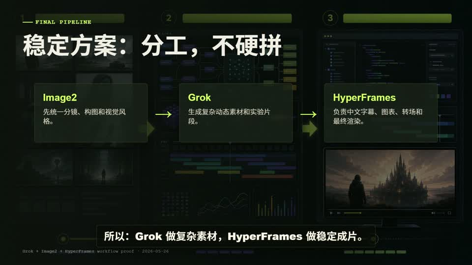
关键制作记录
| 环节 | 记录 |
|---|---|
| Image2 | 6 张分镜全部生成；其中工具登场和结果对比各有一次超时后重试成功。 |
| Grok | OAuth 可用；视频接口出现过可重试网络错误，重试后 3 段素材全部成功。 |
| 转码 | Grok MP4 统一转为单视频流 CFR，避免 HyperFrames 寻帧漂移。 |
| 千问配音 | Voicebox CUDA 后端调用 qwen_custom_voice 1.7B 预置 Dylan 声音，6 段生成后按场景补静音，仅第 2 段小幅压速，整体对齐到 60 秒成片。 |
| HyperFrames | 先草稿渲染，再标准版；最终成品 60 秒。 |
本地文件
成品页：C:\html\articles\grok-hyperframes-collab\index.html
最终视频：C:\html\articles\grok-hyperframes-collab\assets\grok-hyperframes-60s-voiced-better.mp4
配音音轨：C:\html\articles\grok-hyperframes-collab\assets\voiceover-qwen-dylan-1p7b-better.wav
HyperFrames 工程：F:\codex\projects\grok-hyperframes-collab\hyperframes\grok-hyperframes-60s
源报告：C:\html\articles\grok-search-benchmark\index.html